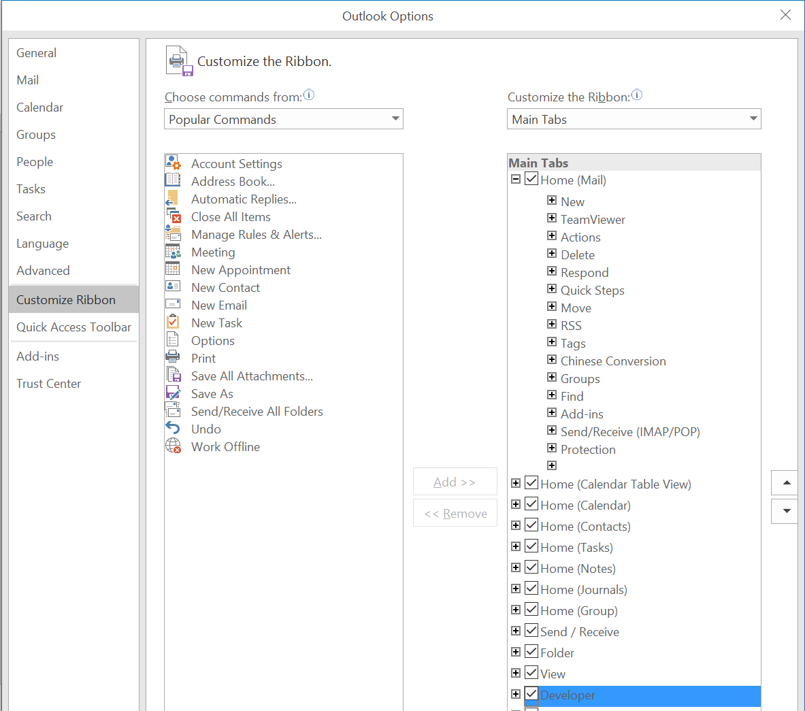
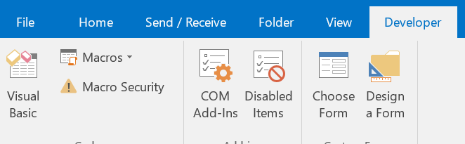
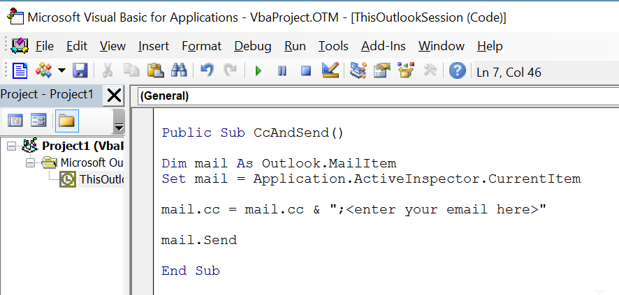
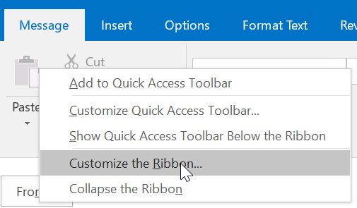
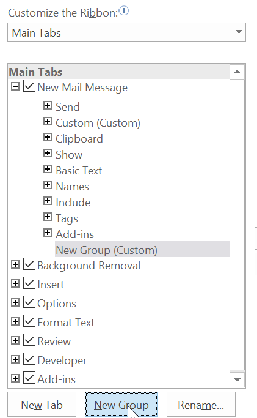
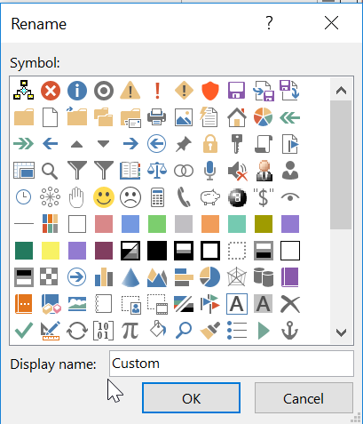
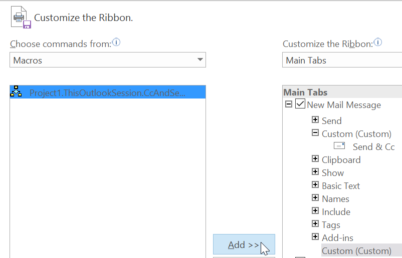
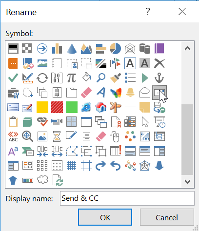
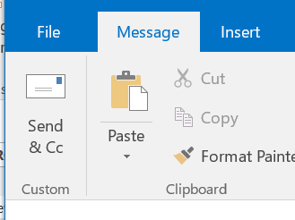

A big part of my Zero Inbox routine is to Cc myself when I want to be reminded to follow up on the mail. This is useful when you want to make sure you don’t send an email with a request from someone and then forget about it.
Up until today, I would manually add myself as Cc, but now I have a single button I can click that will add me as Cc and send the mail. I could have created a rule to always Cc myself, but I only want to occasionally Cc myself and didn’t want to have to clean all that up later.
Here’s how I did it. It’s pretty straight-forward, but took me longer than it should of. Hope this helps you out.
Enable Developer Tab
1. Open Outlook -> File -> Options -> Customize Ribbon -> Check the Developer Tab

Create Macro
1. Click on Developer Tab -> Click on Visual Basic Button

2. Double Click “Project1->Microsoft Outlook Objects->ThisOutlookSession”. Copy and Paste the following code into the code window.
Replace
with the email that you want to Cc.
|

Add Button to Ribbon
1. Open a New Email Message -> Right Click on Ribbon -> Select Customize Ribbon

2. On the right, Click ‘New Mail Message’

3. Click ‘New Group’
4. Right click on the New Group you just created and select Rename. Give it a name like ‘Custom’

5. On the left, Select Macros, click on your macro and then click the Add >> Button

6. Back on the right, Right Click on your macro, select rename, give it a name and select an icon. Click OK.

Test it
1. You should now see the button on your ribbon. Click it and make sure it Ccs and Sends.

Jon